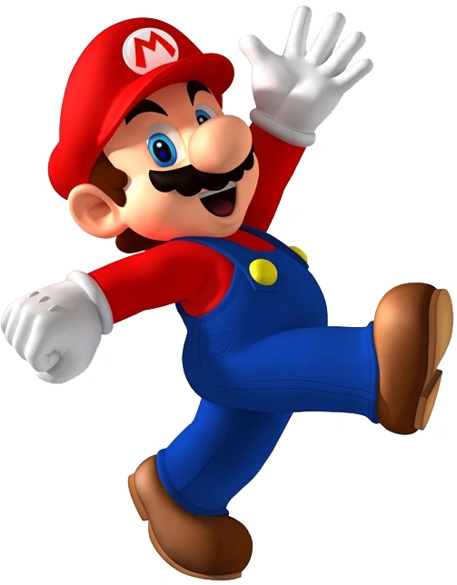
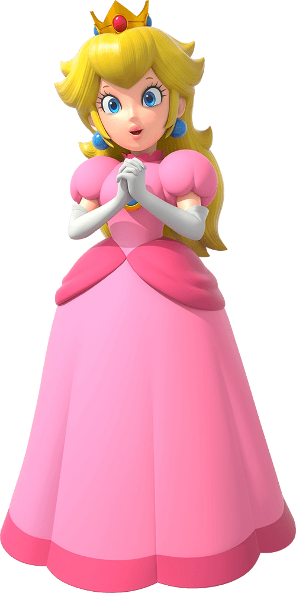
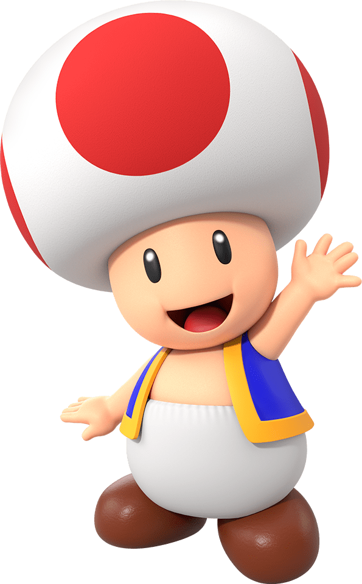
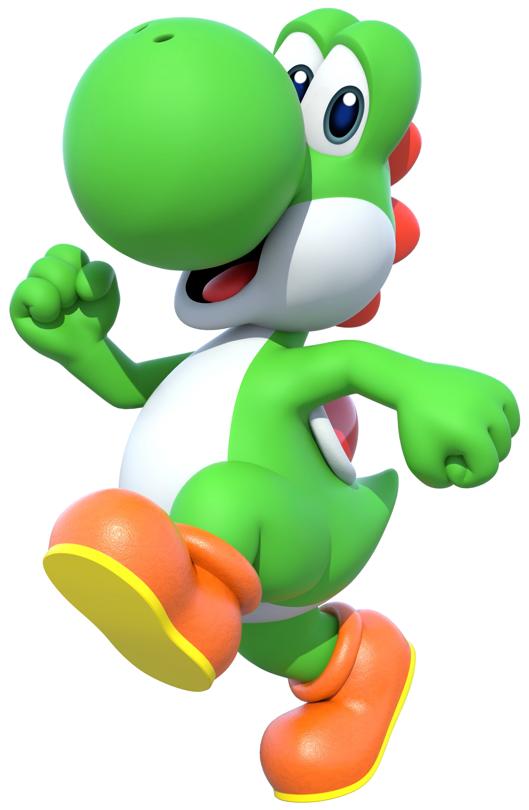
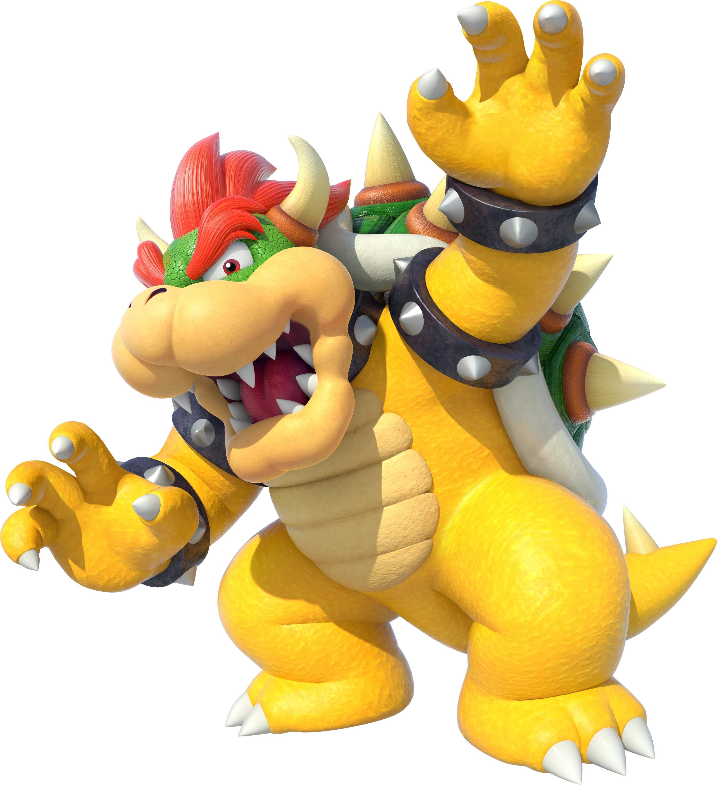
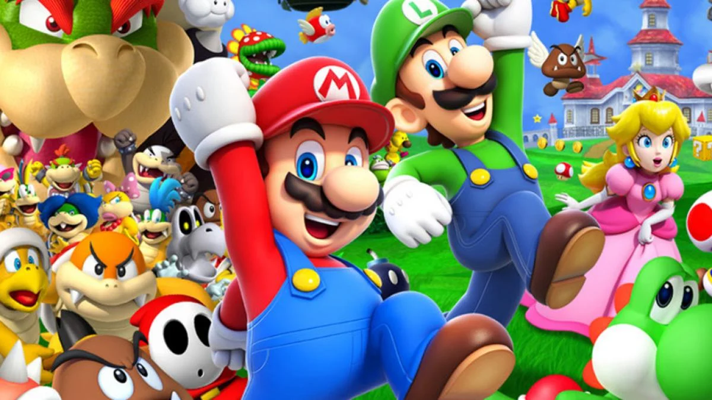

Mario
Es el personaje, protagonista y la mascota principal de Nintendo. Su nombre anterior era "Jumpman".
Apareció por primera vez en el juego Donkey Kong (1981). Viste un overol de mezclilla azul, guantes blancos, una camisa roja de manga larga, una gorra roja y una letra "M" roja grabada en el medio en un círculo blanco alrededor.

Luigi
Información sobre Luigi

Peach
La Princesa Peach (conocida anteriormente como Princesa Toadstool) es la princesa del Reino Champiñón .
Apareció por primera vez en el juego Super Mario Bros. (1985) como la damisela en apuros. Tiene el cabello rubio y usa un vestido color rosa. Se dice que ella y Mario son pareja. Ha sido secuestrada por Bowser en numerosas ocasiones, siendo siempre rescatada por Mario.

Toad
Toad es un pequeño humanoide con la cabeza en forma de champiñón. Su primera aparición fue en Super Mario Bros (1985), en dicho juego, cuando Mario lo rescataba,

Yoishi
Por lo general Yoshi es de color verde como la mayoría de personajes que son reptiles de Nintendo, pero también han aparecido Yoshis de su misma especie, pero de otros colores, personalidades y habilidades

Bowser
El archienemigo de Mario es Donkey Kong y Bowser, también conocido como el rey de los Koopas, el antagonista principal de la gran mayoría de los juegos de Mario. Apareció por primera vez en Super Mario Bros. (1985) .
Bowser es un ser maligno, brutal y despiadado que ha secuestrado a la princesa Peach y tratado de conquistar el Reino Champiñón varias veces, pero Mario siempre lo ha derrotado.

Pulse la imagen para volver al inicio
